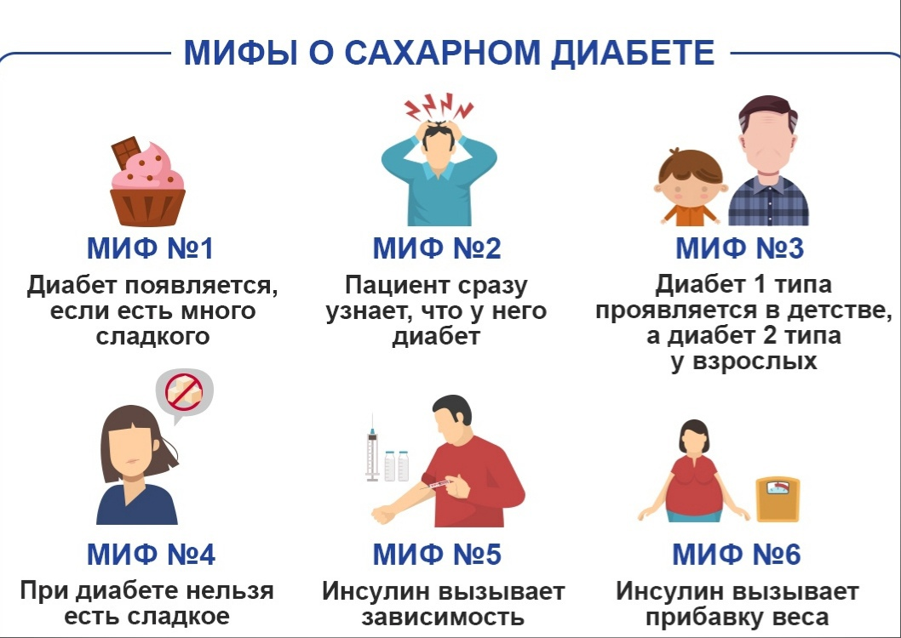

Мифы, фейки, заблуждения
Мифы о диете при сахарном диабетеТак получилось, что в отношении правильного питания при сахарном диабете укоренился ряд неверных представлений. Они популярны не только среди пациентов, но и среди врачей. Но к сожалению, они не становятся от этого правдой.
«Гречневая крупа не повышает сахар крови (в советское время ее даже выдавали пациентам с диабетом по талонам)»Этот продукт оказывает умеренное сахароповышающее действие – такое же, как и любая другая «рассыпчатая» каша (рис, пшено и т.п.). Принципиальных преимуществ не имеет. «Мед наполовину состоит из фруктозы, поэтому является сахарозаменителем»
Мед состоит из фруктозы и глюкозы в примерно равных соотношениях. Молекула пищевого сахара (сахарозы) также состоит из остатка фруктозы и остатка глюкозы. Сахароповышающее действие меда такое же, как у сахара. «Черный хлеб повышает сахар крови меньше, чем белый»
Их сахароповышающее действие одинаково. Но сдобный хлеб повышает сахар крови сильнее, а хлеб с добавлением отрубей или неразмолотых злаков – меньше, чем обычный. Сахароповышающее действие зависит от количества хлеба: понятно, что 1 батон черного хлеба повысит сахар больше, чем 1 кусок белого. «Несладкие (зеленые) яблоки при диабете допустимы, сладкие – нет»
Вкус яблока зависит от содержания органических кислот, а содержание сахара – скорее от размера и степени зрелости, чем от цвета. «Полностью исключать сахар из питания нельзя, т.к. глюкоза нужна для мозга»
Мозг действительно потребляет глюкозу, но ту, что находится в крови. Если при СД ее уровень повышен – принимать ее дополнительно не имеет смысла. «Диета при сахарном диабете должна состоять в максимальном ограничении углеводов»
Питание человека с сахарным диабетом 1 типа, умеющим контролировать свое заболевание, практически не отличается от питания любого другого человека
Питание человека с СД2 включает довольно серьезные ограничения — рекомендуется исключение/максимальное ограничение «быстрых» углеводов — т.е. сахара и сахаросодержащих продуктов; при избыточной массе тела очень важным условием является ограничение калорийности пищи — в основном за счет жиров, в первую очередь — жиров животного происхождения. При этом «сложные» углеводы (крупы, хлеб, макаронные изделия, картофель) составляют 50-60% от общей калорийности пищи. «Я никогда не смогу похудеть, потому что толстею не от еды. а от гормональных нарушений/таблеток/инсулина»
Лишние килограммы невозможно набрать из воздуха. Избыток массы тела — результат того, что мы потребляем энергии больше. чем расходуем. Снижение массы тела — процесс долгий и нелегкий, и над этой задачей нужно трудиться постоянно — путем ограничения калорийности питания, расширения объема физических нагрузок, иногда — с помощью медикаментов и хирургических методов. «Глюкозу крови всегда нужно определять строго натощак»
Для того, чтобы избежать осложнений диабета, важно поддерживать близкие к норме значения сахара крови на протяжении всех суток. Поэтому нам важны значения глюкозы крови как натощак, так и в течение дня (а иногда и «ночные» цифры). Мифы об инсулине При сахарном диабете 2 типа инсулин – одно из сахароснижающих средств, применяемых для лечения заболевания и поддержания сахара крови на безопасном уровне. Но так уж сложилось, что добавление к лечению инсулина вызывает очень много неприятных эмоций и тяжело переносится многими пациентами. Во многом это связано с неверными представлениями об инсулине, укоренившимися в обществе.
В реальности инсулинотерапия при СД 2 типа имеет лишь два недостатка: требует обучения пациента правильному введению препарата и часто имеет более высокую стоимость, чем лечение таблетками. Ниже представлены «мифы» и реальная ситуация: «Инсулин вызывает зависимость, прекращение его введения опасно для жизни. Пациент, получающий инсулин, зависит от своевременности его поставок из-за границы»
СД – хроническое заболевание (одно из многих), несостоятельность бета-клеток при нем требует пожизненного лечения. Таблетки и диета тоже назначаются пожизненно. При достаточной функции бета-клеток временная инсулинотерапия (на период операции или беременности) может быть успешно прекращена. При СД 2 типа отмена инсулина не так опасна, как при СД 1 типа, но при этом углеводный обмен возвращается к тому состоянию декомпенсации, которое было перед началом инсулинотерапии. «Пациент на инсулинотерапии должен вводить его и принимать пищу по часам»
Время приема пищи может сдвигаться в пределах 1-2 часов на терапии микст-инсулином (в этих препаратах в одном растворе смешаны короткий и продленный инсулин) и в практически неограниченных пределах – при раздельном введении короткого и продленного. Требования к режиму питания у пациента, получающего инсулин, не жестче, чем у получающего большинство сахароснижающих таблеток. «Введение инсулина болезненно»
Современные тонкие иглы делают инъекцию практически безболезненной. Для пациентов со страхом инъекций (родственных страху крови) – взрослых и детей – существуют безигольные инъекторы и специальные средства введения, в которых скрыта игла (Pen-mate). «Пациент «привязан» к дому, к хранящемуся в холодильнике инсулину. Введение инсулина технически сложно и требует медицинского образования».
Современные средства введения инсулина (особенно шприц-ручки) позволяют выполнять инъекцию в дороге, в гостях, на работе и т.п. Начатый флакон с инсулином (или картридж шприц-ручки) хранится при комнатной температуре. Инъекция не требует обработки кожи спиртом, может проводиться даже через одежду. После краткого обучения любой человек может освоить введение инсулина, которое технически проще, чем другие инъекции. «Инсулин вызывает прибавку веса»
В отсутствие явной передозировки инсулинотерапия не вызывает прибавки веса значительно больше того, на который «настроена» система регуляции аппетита. Нередко инсулинотерапия начинается после достаточно долгого периода декомпенсации СД. Высокий уровень сахара вызывает снижение веса за счет потери части потребляемой пищи в виде глюкозы мочи. Нормализация сахара (с помощью инсулина или таблеток) прекращает эту потерю питательных веществ, вся потребляемая пища используется организмом, и вес становится таким, которым и должен быть при имеющемся суточном калораже и уровне физической активности.
В крупном и длительном исследовании UKPDS прибавка веса за 10 лет составила в среднем 6,2 кг у пациентов с СД 2 типа на инсулине, 3,5-5 кг – на «классических» таблетированных препаратах (производные сульфонилмочевины) и даже 1,7 кг – на диете (следует помнить о тенденции к постепенной прибавке веса с возрастом – главным образом за счет снижения физической активности).
При это следует помнить, что вред от высокого сахара крови так значителен, что нормальный сахар при избытке веса и применении инсулина – значительно безопаснее, чем высокий сахар при нормальном весе. «Инулинотерапия делает заболевание более тяжелым (требует определения группы инвалидности и т.п.)».
Тяжесть заболевания определяется наличием осложнений. В среднем пациенты на инсулинотерапии имеют большую длительность СД и больше осложнений (особенно – при слишком длительном периоде без инсулина), но более тяжелый диабет — не следствие, а причина инсулинотерапии.
(источник: ГУ «Городская поликлиника № 1г. Гродно»)
ссылки на ДиаИстории (там есть разделы о мифах)
